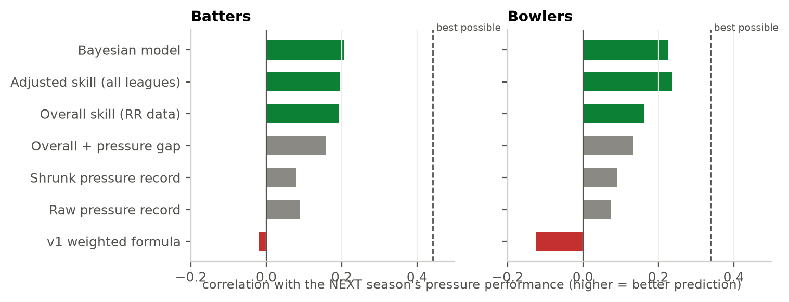
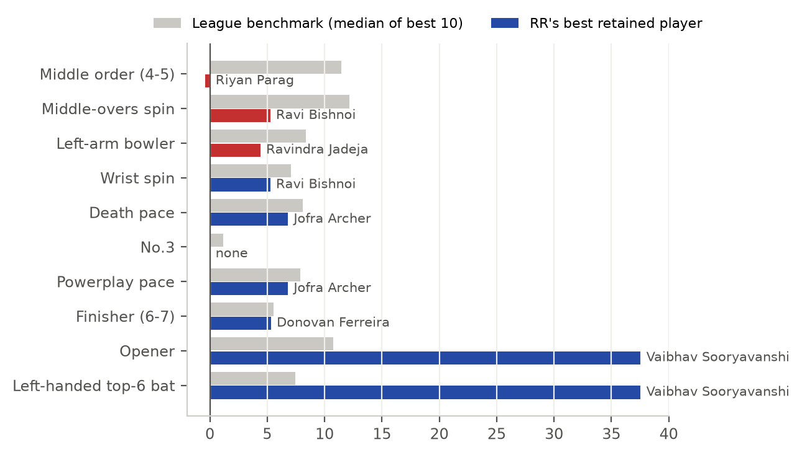

SupeRR Selector Season 2 · Round 1 · Rajasthan Royals × Unstop
Who performs under pressure?
A pressure ball is one where the next delivery can swing the match most – the top 25% of balls by expected change in win probability.
A player's Pressure Rating = runs he is expected to add per 100 pressure balls next season versus what the situation predicts (a wicket = 5.6 runs; 0 = average),
from a Bayesian model tested on seasons it never saw.
Top 10 batters under pressure (submitted on Unstop)
| # | Player | Rating 80% range | P(top 10) | Pressure balls | IPL 2027 status |
|---|
| 1 | Vaibhav Sooryavanshi India | 37.4 10 to 65 | 71% | 295 | RR (retained) |
| 2 | Tim David Australia | 24.7 4 to 45 | 46% | 274 | Retained by RCB |
| 3 | Abhishek Sharma India | 24.3 7 to 41 | 47% | 804 | Retained by SRH |
| 4 | Finn Allen New Zealand | 19.5 -6 to 46 | 37% | 327 | Retained by KKR |
| 5 | Suryakumar Yadav India | 19.3 5 to 34 | 29% | 493 | Retained by MI |
| 6 | Heinrich Klaasen South Africa | 16.6 -3 to 36 | 28% | 185 | Retained by SRH |
| 7 | Phil Salt England | 16.2 -3 to 36 | 26% | 560 | Retained by RCB |
| 8 | Nicholas Pooran West Indies | 15.4 -2 to 32 | 22% | 322 | Retained by LSG |
| 9 | Priyansh Arya India | 10.9 -19 to 41 | 27% | 284 | Retained by PBKS |
| 10 | Tim Seifert New Zealand | 10.5 -15 to 35 | 22% | 325 | Retained by KKR |
Top 10 bowlers under pressure (submitted on Unstop)
| # | Player | Rating 80% range | P(top 10) | Pressure balls | IPL 2027 status |
|---|
| 1 | Jasprit Bumrah India | 24.3 7 to 41 | 60% | 494 | Retained by MI |
| 2 | Sunil Narine West Indies | 21.5 5 to 38 | 51% | 345 | Retained by KKR |
| 3 | Rashid Khan Afghanistan | 16.2 2 to 31 | 34% | 398 | Retained by GT |
| 4 | Wanindu Hasaranga Sri Lanka | 13.6 -1 to 29 | 25% | 329 | Auction pool (ex-LSG) |
| 5 | Varun Chakravarthy India | 13.4 -2 to 29 | 26% | 429 | Retained by KKR |
| 6 | Noor Ahmad Afghanistan | 12.3 -3 to 28 | 23% | 262 | Retained by CSK |
| 7 | Mujeeb Ur Rahman Afghanistan | 11.5 -8 to 31 | 26% | 256 | Auction pool (open market) |
| 8 | Abrar Ahmed Pakistan | 11.1 -9 to 31 | 26% | 169 | Not eligible (Pakistan national) |
| 9 | Blessing Muzarabani Zimbabwe | 10.5 -8 to 30 | 24% | 263 | Auction pool (ex-KKR) |
| 10 | Matheesha Pathirana Sri Lanka | 9.5 -8 to 28 | 18% | 246 | Auction pool (ex-KKR) |
"Clutch" does not repeatA player's pressure-minus-usual gap made next-season predictions worse (batters -0.034, bowlers -0.030 correlation).
Fair overall skill predicts pressure playr = 0.19 / 0.24 vs a best-possible 0.44 / 0.34.
The obvious formula failsA hand-weighted pressure score (our v1) had no out-of-sample signal: r = -0.02 / -0.12.
P(top 10) = chance of being a genuine top-10 player after uncertainty; only 1 batter(s) and 2 bowler(s) exceed 50%, so most ranks are near-ties.
Status = IPL 2027 retention lists of 17 Nov 2026 (most top names were retained by their teams – see §6 for what RR can actually buy).
1 · The brief and our answer
What the problem statement asks – and where we answer it
| Required | Our solution | Where |
|---|
| Pressure definition | Learned leverage index: how much the next ball can swing win probability; top 25% of balls = pressure. 7 definitions compared. | §2 |
| Performance measurement | Run value per ball vs the situation's expectation (wicket = 5.6 runs); batters and bowlers on one scale; pressure vs usual shown for every player. | §3 |
| Fair comparisons | Opposition, venue, era and league strength adjusted (1.6 M public balls); Bayesian shrinkage for small samples; eligibility ≥150 pressure balls, active 2025+. | §3 |
| Evidence for the top 10 | Ratings with 80% ranges, P(top 10), observed pressure vs normal, biggest pressure moments, scout cards for 60 players, interactive site. | §4 |
| Reliability & limitations | Tested on 4 seasons the models never saw; clutch test; calibration; sensitivity; ablation; fairness; full rerun reproduces the lists. | §5 |
| Two ordered top-10 lists | Open rankings on p.1 = the Unstop picks. RR auction view (after 17 Nov retentions) kept separate in §6. | p.1 |
From ball to rating: the pipeline
1
Win probabilityevery ball, both innings; era, venue, team strength
→
2
Leveragehow much the next ball can swing the match
→
3
Expected outcomeruns & wicket chance for that exact situation
→
4
Run valuewhat the player added vs expectation
→
5
Fair comparisonopposition, venue, league strength
→
6
Bayesian ratingshrink small samples; calibrated 80% range
1.67 M
deliveries modelled (RR pack + 15 public T20 competitions, 2019–26)
89 / 102
eligible batters / bowlers (≥150 pressure balls, active 2025+)
4
season-ahead test folds (2023–26): every model scored on unseen seasons
9
player-skill models compared, incl. the v1 formula
Data & rules we followed
RR pack (IPL + T20I + A-team 2022–26) for ratings; Cricsheet (ODC-By) public T20 data only as a prior and for league strength; 99.07% of RR balls linked to public IDs by ball alignment.
No leakage: every predictive model is trained on earlier seasons and scored on the next. Reputation and news never change a rating – scout notes only flag risks.
What else we built
Player profiles for 6,748 players (all splits, reconciled to the ball data), 60 scout cards, value & uncapped lists with a price model, a youth board with a backtested development model,
an RR squad-gap analysis after retentions, and a private interactive website for evaluators. One command (run_all.sh) reproduces everything.
2 · Pressure definition
Pressure = balls where the next delivery can swing the match
For every ball we estimate the batting side's win probability (logistic model with run rate, wickets, balls, target, era par, venue and team Elo). Leverage = the expected change in that probability from the next ball, averaged over its possible outcomes (0,1,2,3,4,6,wicket). The top 25% of balls are pressure balls.
The chart shows the shape cricket people expect: a chase tightens towards the end (3.5× an average ball in the 20th over), the death overs of the first innings matter, and middle overs are calm. Knockouts and close finishes are captured automatically.
We compared seven definitions (rule fixed in advance: keep leverage unless another is better on both tests)
| Definition | Capture× | Reliab. bat | Reliab. bowl |
|---|
| leverage | 1.98 | 0.18 | 0.04 |
| leverage phase | 1.94 | 0.16 | 0.04 |
| baseline PI | 1.93 | 0.16 | 0.03 |
| rrr gap | 0.90 | 0.37 | -0.29 |
| wicket stress | 0.76 | 0.07 | 0.28 |
| close game | 1.35 | 0.12 | 0.09 |
| leverage stakes | 1.97 | 0.22 | 0.12 |
Capture× = share of all win-probability movement that falls on the flagged balls, relative to random (1.0). Leverage captures 2.0× – twice as much swing per ball as chance.
Reliability = how well a player's performance on those balls in one half of his matches matches the other half. Required-rate gap (chases only), wicket stress and the close-game window capture far less of the match swing. The baseline's knockout-weighted index and a playoff-stakes version are near-identical and serve as sensitivity checks.
3 · Performance measurement & fair comparisons
Run value: what a player adds beyond what the situation predicts
Per ball: runs scored − expected runs for that exact situation − 5.6 × (dismissal − expected dismissal chance). Bowlers: the mirror image (runs saved + wickets).
Expected values come from a gradient-boosting model of the situation only (innings, over, wickets, target, required rate, era, venue, team strength – no player information), so openers are not flattered by the powerplay and finishers are not punished for facing yorkers.
The usual vs pressure comparison the brief asks for is computed for every player (§4).
How strong is each league? (IPL = 0; further left = weaker)

Fair across leagues, venues, opponents, eras
A ridge model of 1.6 M deliveries separates player skill from league, venue and opponent effects, using players who appear in several competitions (match-bootstrap SEs ≈ 0.4–1.2 runs per 100 balls). Full-member T20Is sit close to the IPL; associate T20Is are about 18 runs per 100 balls weaker for batters.
Small samples: a hierarchical Bayesian model shrinks thin records toward the average; eligibility needs ≥150 pressure balls and an appearance in 2025 or later. Era: IPL par rose from about 162 to 186 since the Impact Player rule; the par term absorbs it.
Win-probability model: logistic regression beat tree models on unseen seasons (log-loss 0.634/0.402 vs the v1 replica 0.695/0.463); simpler was better, so it was kept.
4 · Evidence for the top 10
Ratings with honest uncertainty
Pressure vs usual performance
Each dot is an eligible batter: observed run value on pressure balls (y) vs normal balls (x). Players above the line did better under pressure. Because that gap did not repeat from one season to the next, the rating relies on skill measured on all balls and shrinks the gap away – the gap is still shown for every player.
Behind each name: pressure strike rate / economy, phase splits, matchups, the three matches where he added most win probability (e.g. Bumrah 4-0-20-0 v RCB, +48% win probability), and sourced risk notes – in the 60 scout cards and on the website.
Sooryavanshi leads by a wide margin; we re-derived his numbers from the raw ball file (295 pressure balls, SR ≈ 229) – it is in the data, not an artefact.
5 · Reliability and limitations
Tested on seasons the models never saw

Consistency checks
| Variant | Bat top 10 kept | Bowl |
|---|
| Pressure = v1 index (x1.2 knockouts) | 8/10 | 9/10 |
| Pressure weighted by playoff stakes | 8/10 | 9/10 |
| Eligibility 100 pressure balls | 8/10 | 8/10 |
| Eligibility 200 pressure balls | 9/10 | 9/10 |
| Rank by adjusted skill only | 8/10 | 7/10 |
| Add pressure-specific effect | 10/10 | 7/10 |
| Rank by raw pressure record | 6/10 | 1/10 |
Ranking by the raw pressure record changes the list most – that is the noise our model removes.
Ablation: age curve and the pressure-specific term were dropped (no out-of-sample gain); public-league prior kept for bowlers only.
Fairness: errors for IPL-heavy, T20I-heavy and public-data-heavy players all within ~1 SE of zero.
Reproducible: a clean rerun from raw data reproduces every list; one #10 near-tie (0.01 apart) can swap through sampler noise.
Limitations
One season of pressure balls is mostly noise, so ranks inside the top 10 are close; fielding, pitch and weather are not in the data; batting hand / bowling type only exist for RR-pack balls; first-innings early overs carry above-average leverage under our WP model (ratings use all balls, so the top 10 is unaffected); auction prices are hard to predict; scout notes are opinion and never change a rating.
6 · For Rajasthan Royals: after the 17 Nov 2026 retentions
Where RR is exposed – and who it can actually buy
RR's best retained player per role vs league benchmark (red = big gap)

RR kept 19 players incl. Mohammed Shami and M Siddharth (traded in); Hetmyer, Deshpande, Milne, Maphaka and five others were released and Sam Curran went to LSG. The middle order (4–5) is now the biggest gap, then middle-overs spin; opening is RR's strength (Sooryavanshi).
| Team | Purse ₹cr | Slots | OS |
|---|
| Lucknow Super Giants | 47.45 | 7 | 3 |
| Kolkata Knight Riders | 41.65 | 8 | 3 |
| Sunrisers Hyderabad | 40.15 | 7 | 3 |
| Delhi Capitals | 39.50 | 9 | 4 |
| Mumbai Indians | 32.60 | 9 | 2 |
| Chennai Super Kings | 28.05 | 6 | 2 |
| Rajasthan Royals | 27.05 | 6 | 3 |
| Punjab Kings | 18.60 | 6 | 2 |
| Royal Challengers Bengaluru | 14.15 | 5 | 1 |
| Gujarat Titans | 8.75 | 3 | 2 |
Auction plan for the biggest gaps (only players in the auction pool)
| Role | Plan A | Plan B | Plan C | Value pick (≤ ₹3 cr) |
|---|
| Middle order (4-5) gap 11.8 | Mark Chapman 6.2 | Sikandar Raza 5.7 | Glenn Maxwell 5.7 | Asif Khan 4.3 |
| Middle-overs spin gap 6.9 | Wanindu Hasaranga 13.6 | Mujeeb Ur Rahman 11.6 | Roston Chase 7.3 | Dunith Wellalage 6.8 |
| Left-arm bowler gap 4.0 | Mustafizur Rahman 7.8 | Dunith Wellalage 6.8 | Matthew Humphreys 6.6 | Spencer Johnson 3.4 |
| Wrist spin gap 1.8 | Wanindu Hasaranga 13.6 | Adil Rashid 2.9 | Adam Zampa 2.6 | Qais Ahmad -0.9 |
| Death pace gap 1.3 | Blessing Muzarabani 10.4 | Matheesha Pathirana 9.6 | Mustafizur Rahman 7.8 | Ottneil Baartman 5.8 |
7 · Beyond the top 10
Value buys, youth talent and what we delivered
Value & uncapped
| Batter | Cap | Rating | Status |
|---|
| Shai Hope | capped | 7.7 | pool (open market) |
| Mark Chapman | capped | 6.2 | pool (open market) |
| Sikandar Raza | capped | 5.7 | pool (open market) |
| George Dockrell | capped | 5.2 | pool (open market) |
| Asif Khan | capped | 4.3 | pool (open market) |
| Bowler | Cap | Rating | Status |
|---|
| Roston Chase | capped | 7.3 | pool (open market) |
| Dunith Wellalage | capped | 6.8 | pool (open market) |
| Matthew Humphreys | capped | 6.6 | pool (open market) |
| Ottneil Baartman | capped | 5.8 | pool (open market) |
| Brad Evans | capped | 4.6 | pool (open market) |
Youth board (≤23 on 1 Apr 2027)
| Batter | Age | Board | Proj. | Status |
|---|
| Vaibhav Sooryavanshi | 16 | Buy now | 106.3 | RR |
| Ayush Mhatre | 19 | Buy now | 61.2 | Retained by CSK |
| Dewald Brevis | 23 | Strong watch | 48.5 | Retained by CSK |
| Brian Bennett | 23 | Strong watch | 43.7 | pool (open market) |
| Hassan Eisakhil | 20 | Strong watch | 35.9 | pool (open market) |
| Bowler | Age | Board | Proj. | Status |
|---|
| Noor Ahmad | 22 | Strong watch | 32.9 | Retained by CSK |
| Allah Ghazanfar | 20 | Strong watch | 32.6 | pool (ex-MI) |
| Sakib Hussain | 22 | Strong watch | 29.3 | Retained by SRH |
| Joel Davies | 23 | Strong watch | 22.3 | pool (open market) |
| Cooper Connolly | 23 | Strong watch | 21.1 | Retained by PBKS |
Youth projections = adjusted skill per 100 balls in all situations (different scale); development model backtested on players aged ≤23 in 2021. Minors: cricket data and age only.
What we delivered
Interactive evaluator site
Private, password-protected and encrypted: rankings with filters, a profile page for 394 players, compare, method explainer, RR strategy and this report.
Reproducible pipeline
30 stage scripts, one command (run_all.sh), fixed seeds, pinned environment; a clean rerun from raw data reproduces every list (one 0.01 near-tie can swap).
Decision support for the auction
Scout cards for 60 players, value and youth boards, squad-gap analysis and plan A/B/C per role – refreshed after the 17 Nov retentions; config files make the next refresh a rerun, not a rewrite.